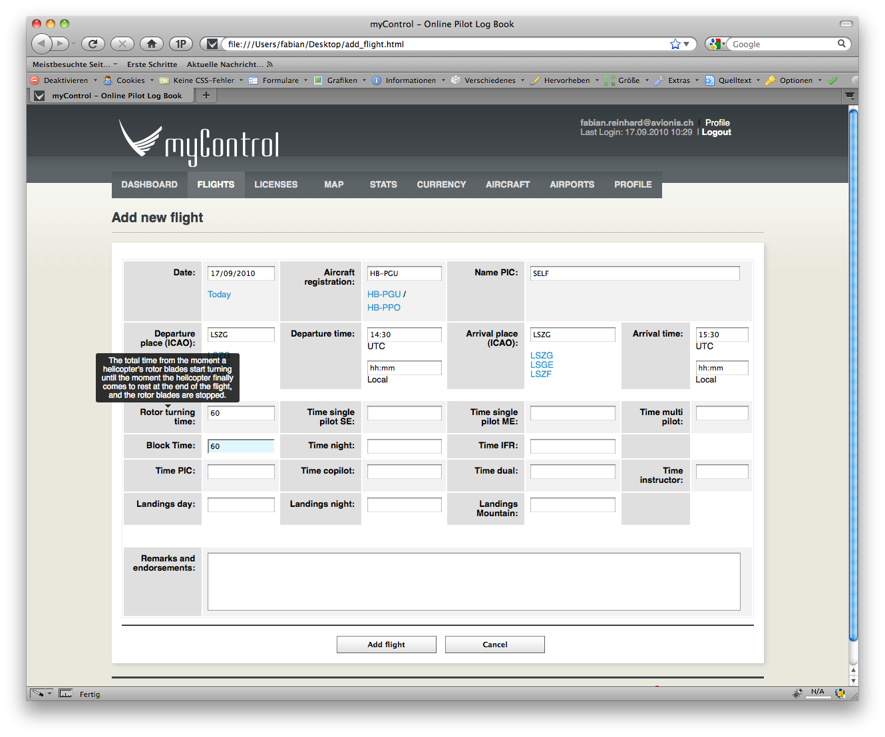

Logbook für Helicopter-Piloten
Gesetzliche Grundlagen
Helipiloten zeichnen in ihrem Flugbuch die Rotor Turning Time auf. Die entsprechende Weisung gilt seit Januar 2007 und wurde vom BAZL im Zusammenhang mit der Einführung von JAR-FCL 2 erlassen.

Flight time ist nach JAR-FCL 2.001 definiert als:
The total time from the moment a helicopter’s rotor blades start turning until the moment the helicopter finally comes to rest at the end of the flight, and the rotor blades are stopped.
Block time ist gemäss der Verordnung des UVEK über die Betriebsregeln im gewerbsmässigen Luftverkehr (748.127.1 PDF) definiert als:
Gesamtzeit zwischen dem erstmaligen Abrollen eines Luftfahrzeugs aus seiner Parkposition zum Zweck des Startens bis zum Stillstand an der zugewiesenen Parkposition und bis alle Triebwerke abgestellt sind.
Bei Hubschraubern gilt als Blockzeit die Gesamtzeit zwischen der erstmaligen Fortbewegung eines Hubschraubers zum Zwecke des Abfluges und dem Stillstand nach Beendigung des Fluges.
Rotor Turning Time / Block Time
Aus den zwei Definitionen ergeben sich folgende Implikationen:
- Die Block Time ist kürzer als Rotor Turning Time (Motor läuft schon und Pilot geht z.B. noch die Checkliste durch.)
- Bei einem Flug mit mehrmaligem Absetzen „läuft“ die Rotor Turning Time weiter, die Blockzeit kann aber unterbrochen werden, wenn der Heli auf den Kufen steht.
- Für Currency Limitation ist einzig die Block Time relevant.

Umsetzung in myControl
MyControl testen: https://www.mycontrol.aero
In myControl hat der Helipilot zusätzlich zur Rotor Turning Time für jeden Flug die Möglichkeit die Block Time zu loggen. Auf dem PDF-Ausdruck seines Flugbuches wird die Rotor Turning Time ausgewiesen, die Block Time wird ausschliesslich für die Berechung der Currency Limitation verwendet.
